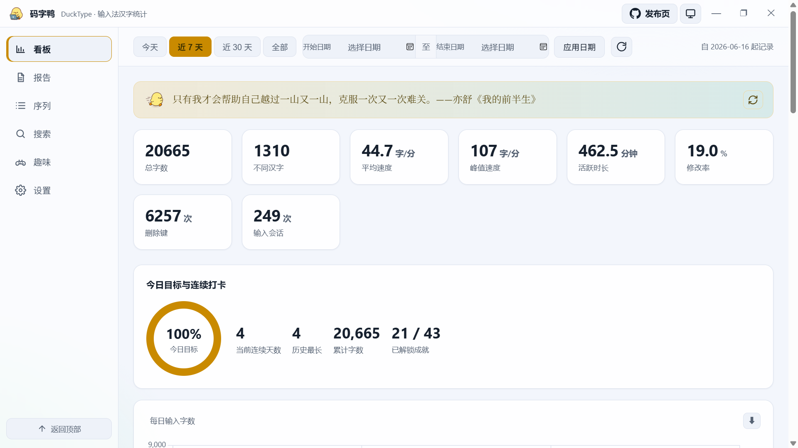
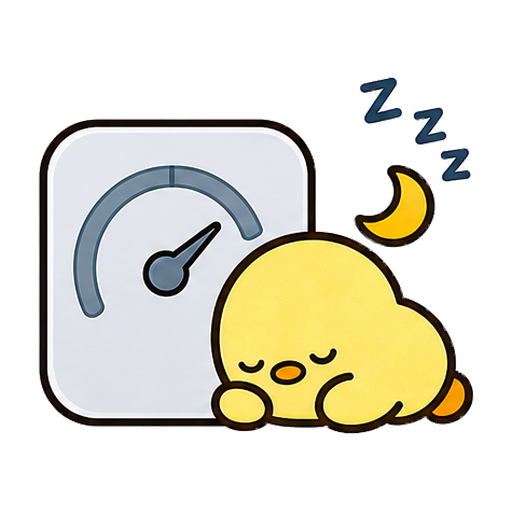

上屏汉字统计
直接观察输入法最终提交的中文字符，而不是键盘按键，让中文输入量更接近真实写作产出。
Windows 本地中文输入统计
它安静待在托盘里，只统计输入法真正上屏的汉字。拼音、英文、数字不入库，数据默认留在本机，再整理成写作节奏、词汇和报告。
真实仪表盘
核心指标、每日趋势、活跃时段、应用分布、高频字词、词性、贡献热力图和完整报告都在一个本地窗口里。你可以加载演示数据先预览，也可以让它从今天开始安静记录。

功能
直接观察输入法最终提交的中文字符，而不是键盘按键，让中文输入量更接近真实写作产出。
不记录拼音、英文、数字和普通快捷键；支持跳过密码框、应用黑名单、暂停统计与数据保留期。
今日、周、月、年报告会把数字翻译成人话，还能导出分享卡片和包含趋势、洞察、词频的长图。
人名、项目代号、口头禅和自定义词库都能被精确计数，适合观察长期主题和表达习惯。
按时间线回看真实上屏片段，支持按应用和关键词筛选，也能导出 TXT、CSV 或 JSON 做二次分析。
悬浮置顶小窗显示实时速度、本次会话、今日字数和目标进度，写作时不用打开完整看板。
本地优先
DuckType 的核心数据是每个上屏汉字、时间戳和当时应用名。所有记录默认存在你选择的数据目录里，备份、迁移、删除都由你控制。
适合谁
看论文、笔记、开题和整理阶段的真实推进量。
用周报和词频回顾近期主题、表达和产出节奏。
把每日目标、连续记录和项目词汇变成长期反馈。
知道自己在哪些应用里写得最多，什么时候最顺。

开源与未来
核心统计可以继续开源；未来更适合盈利的方向，是高级报告模板、项目维度、专业词库包、本地加密备份和隐私优先的团队自愿打卡。
捕获诊断、新手引导、隐私档案。
项目目标、Markdown 周报、年度回顾。
高级模板、词库包、可选加密同步。